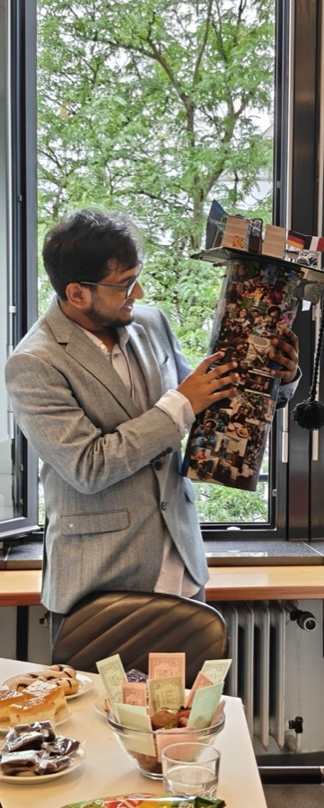

A knack for uncovering mysteries

Born in 1997 in Barrackpore, India, a town steeped in history (seriously, Google it for a wild ride!), I’ve always had a knack for uncovering mysteries. Growing up amidst the echoes of the past, I developed a deep curiosity about the world around me, fueled by the rich tapestry of stories woven into the fabric of my hometown.
I completed my Bachelor’s and Master’s degrees in Physics at Presidency University, Kolkata. During my undergraduate studies, I worked on semi-numerical N-body simulations of cosmic reionization. Later, I became interested in observational astronomy, working with GMRT archival data to study dark matter in dwarf spheroidal galaxies. I also explored the 21 cm properties of gas in Galactic halos and disc galaxies.
I then moved to the Max Planck Institute for Astrophysics in Munich for my Ph.D., working with Benedetta Ciardi. My research focused on high-redshift astrophysics and the early Universe, particularly the processes that shaped the formation and evolution of the first galaxies.
Since October 2025, I have been a postdoctoral researcher at CRAL in Lyon, where I am part of the GALPAC team. My current research focuses on uncovering the hidden population of galaxies from Cosmic Dawn through the era of Cosmic Reionization.
The journey so far
-
1997
Barrackpore, India
Where it all began.
-
2015 – 2020 · B.Sc. & M.Sc. in Physics
Presidency University, Kolkata
Semi-numerical simulations of reionization, GMRT archival data on dark matter in dwarf spheroidals, and 21 cm studies of Galactic gas.
-
2021 – 2025 · Ph.D. & Postdoc
Max Planck Institute for Astrophysics, Garching
Hydrogen and helium reionization, and the first galaxies, with Benedetta Ciardi.
-
Since October 2025
CRAL, Lyon · GALPAC team
Uncovering the hidden population of galaxies from Cosmic Dawn through Cosmic Reionization.
Off the clock
On stage
When I’m not decoding the cosmos, you’ll find me acting with a State Level Theatre Group, which I’ve been part of for over 12 years.
Out in the hills
I’m all about the adventures: hiking, biking, or, let’s admit it, occasionally slipping off mountains (oops!).